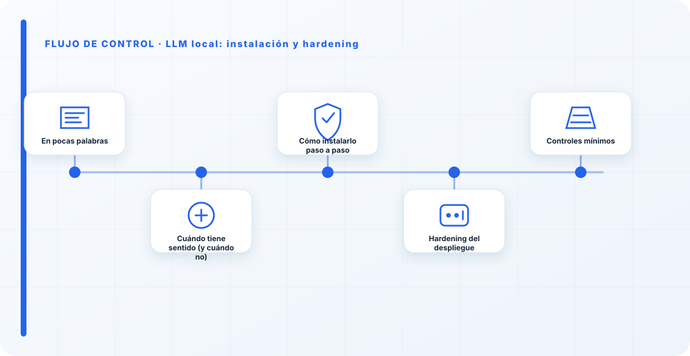
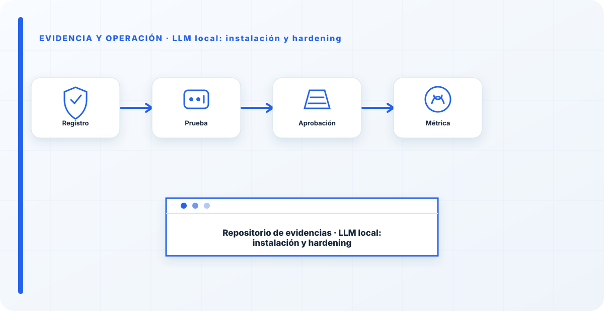

En pocas palabras
Un LLM local te da privacidad, control del dato y funcionamiento sin depender de una nube. Pero el software que lo sirve viene pensado para que funcione, no para que esté seguro: la mayoría de runtimes escuchan sin autenticación y confían en que tú pongas el perímetro. El dato que lo demuestra: a principios de 2026, investigaciones de escaneo de Internet (SentinelLabs y Censys) contaron alrededor de 175.000 servidores Ollama expuestos — casi ninguno hackeado; simplemente alguien abrió el binding a la red y se olvidó del firewall. Local no es sinónimo de seguro. El hardening lo pones tú.
Cuándo tiene sentido (y cuándo no)
No monto un LLM local por moda, lo monto cuando hay una razón. Y hay razones buenas:
- Residencia y confidencialidad del dato: el prompt y el contexto no salen de tu red. Para datos regulados o sensibles, esto lo cambia todo.
- Entornos air-gapped u offline: sitios sin salida a Internet donde una API en la nube no es opción.
- Coste y control: sin coste por token, con control total de versión y disponibilidad.
Y hay que ser honesto con lo que no te da: un modelo local pequeño rara vez iguala en calidad a un modelo frontera, hereda todo el coste de mantenimiento y hardware, y —esto es lo que la gente olvida— no es más seguro por el hecho de ser local; solo mueve la responsabilidad a tu tejado.
Cómo instalarlo paso a paso
Instalar es lo fácil; se hace en minutos. La decisión de verdad es qué runtime y qué modelo aguanta tu hardware. Por eso este paso lleva más datos que comandos: si aciertas aquí, el resto es mecánico.
1 · Elige el runtime (esto es la decisión, no un detalle)
En 2026, "ejecutar un LLM local" ya no es una decisión: son cinco runtimes que optimizan cosas distintas y que no son intercambiables. De hecho uno de ellos —llama.cpp— es el motor que va por debajo de casi todos los demás. La regla que uso:
- Ollama para empezar, prototipar y equipos pequeños.
- LM Studio para la fase de "probar modelos" antes de comprometerte.
- vLLM cuando hay que servir a mucha gente a la vez.
- llama.cpp para hardware modesto, raro o air-gapped, con control total.
- MLX en Mac Apple Silicon (Ollama ya lo usa por debajo en chips M).
| Runtime | Para qué lo elijo | Interfaz | Concurrencia | Hardware / notas |
|---|---|---|---|---|
| Ollama | Empezar, prototipo, equipos pequeños. | CLI + servicio · API compatible OpenAI en :11434 | Secuencial (bien para 1 usuario) | Multiplataforma. Envuelve llama.cpp (x86) o MLX (Mac). |
| LM Studio | "Model shopping": probar modelos antes de decidir. | GUI | Limitada | Win/Mac/Linux · solo modelos precuantizados · gratis para uso comercial. |
| vLLM | Producción multiusuario, servir a muchos. | API (sin GUI) · :8000 | Muy alta (PagedAttention, batching continuo) | NVIDIA/AMD, multi-GPU. Del orden de 15–20× la concurrencia de Ollama en pico. |
| llama.cpp | Hardware modesto/raro o air-gapped, control total. | CLI / librería | Baja–media | El motor que hay debajo de casi todos. Permite cuantización a medida. |
| MLX | Exprimir un Mac Apple Silicon. | Librería / CLI | Media | Solo Apple Silicon. La vía más rápida en M-series. |
Ojo con el mito del rendimiento: esa diferencia de 15–20× solo aparece en pico, con muchos usuarios a la vez. Con un solo usuario, Ollama y vLLM van casi igual. No montes vLLM "por velocidad" si vas a ser tú solo — te complicas el mantenimiento sin ganar nada. Mi flujo típico: pruebo candidatos en LM Studio, prototipo con Ollama, y solo salto a vLLM cuando hay que servir a un equipo o integrar en producción.
2 · Dimensiona el hardware (y entiende la cuantización)
La pregunta que decide todo lo demás: ¿cuánta VRAM tienes? Regla rápida — la memoria necesaria es, más o menos, el número de parámetros por los bytes de cada peso. En FP16 son 2 bytes por parámetro (un modelo de 7B pide unos 14 GB); cuantizado a 4 bits baja a ~0,5 byte por parámetro (unos 4–5 GB para ese mismo 7B, más el margen del contexto). En Apple Silicon lo que cuenta es la memoria unificada.
| Tamaño del modelo | VRAM aprox. (Q4) | Equipo típico |
|---|---|---|
| 7–8B | 6–8 GB | GPU de 8 GB, portátil potente o Mac de 16 GB. |
| 13–14B | 10–12 GB | GPU de 12–16 GB. |
| 30–34B | ~20–24 GB | GPU de 24 GB (RTX 4090/5090) o Mac de 32–48 GB. |
| 70B | ~40–48 GB | Multi-GPU o Mac de 64 GB+. |
Cuantización: Q4_K_M es el punto dulce calidad/tamaño para la mayoría de casos; Q5/Q6 ganan algo de calidad a cambio de más memoria; Q8 se acerca a FP16; FP16 es el modelo completo. Si dudas, empieza en Q4_K_M y sube solo si notas que la calidad no llega.
Qué modelos abiertos tienen sentido hoy: Llama 3.3, Qwen 3.5, Mistral, Gemma, Phi y DeepSeek. La familia open-weight ya rivaliza con las APIs propietarias en muchas tareas; lo que decide tu experiencia no es tanto el modelo como el runtime y el tamaño que aguante tu equipo.
3 · Instala el runtime
Con Ollama como ejemplo: en Linux/macOS la instalación oficial es un script; en Windows hay instalador propio y también imagen Docker. Regla de oro de seguridad de la cadena de suministro: nunca canalices a la shell un script que no has mirado. Descárgalo, léelo y luego ejecútalo. En Linux queda como servicio de systemd — recuérdalo, porque el binding se configura ahí, no en tu shell.
4 · Descarga un modelo y verifícalo en local
Descarga solo modelos de procedencia comprobable y fija la etiqueta de cuantización que has decidido (p. ej. :8b-instruct-q4_K_M). Antes de seguir, comprueba que responde en localhost. Un modelo es una dependencia de tu cadena de suministro: trátalo como tal.
5 · Confirma el binding ANTES de exponer nada
Este es el paso que casi todos se saltan, y es el que separa un despliegue seguro de uno de los 175.000 expuestos. Verifica en qué interfaz escucha el puerto. Y cuidado en Linux: si Ollama arranca por systemd, las variables de tu shell no aplican — el binding se define en el servicio.
# Ollama · instalar (revisa el script antes de ejecutarlo) curl -fsSL https://ollama.com/install.sh -o install.sh less install.sh # léelo sh install.sh # descargar un modelo con cuantización explícita y probarlo en local ollama pull llama3.1:8b-instruct-q4_K_M curl http://localhost:11434/api/tags # CLAVE: ¿en qué interfaz escucha? Debe ser 127.0.0.1 ss -ltnp | grep 11434 # 127.0.0.1:11434 -> bien (solo local) # 0.0.0.0:11434 -> expuesto a toda la red: corrígelo

Hardening del despliegue
Este es el motivo real de la guía. El orden importa: no sirve de nada poner un proxy bonito si el puerto sigue escuchando por debajo. Mi secuencia es siempre Bind → Actualizar → Firewall → Proxy con autenticación → Túnel/VPN.
1 · Fija el binding a localhost
Por defecto Ollama escucha en 127.0.0.1:11434, que es lo correcto. El problema aparece cuando alguien pone OLLAMA_HOST=0.0.0.0 para acceder desde otra máquina. Si necesitas acceso de red, bíndalo a una IP concreta de la LAN, nunca a 0.0.0.0 a la ligera, y jamás sin firewall.
2 · Mantén el runtime actualizado
Se han documentado vulnerabilidades en servidores expuestos que permiten leer memoria del proceso —prompts, variables de entorno, claves de API— sin autenticación. La versión desactualizada es tu mayor riesgo. Parchea y suscríbete a los avisos del proyecto.
3 · Firewall que rechaza el acceso externo al puerto
El firewall del sistema debe rechazar toda conexión externa al 11434. No dependas de que "está en localhost": defiéndelo también a nivel de red.
# denegar el puerto desde el exterior (ejemplo ufw) sudo ufw deny 11434/tcp # o permitir solo una IP/subred de confianza sudo ufw allow from 192.168.10.0/24 to any port 11434 proto tcp
4 · Proxy inverso con autenticación y TLS
Si hay que dar acceso, nunca se expone la API en crudo. Se pone delante un proxy inverso (Nginx) que añada TLS y autenticación (Basic Auth o, mejor, una capa de identidad), y el runtime sigue escuchando solo en localhost por detrás.
# Nginx · TLS + auth delante de Ollama (que sigue en localhost)
server {
listen 443 ssl;
server_name llm.interno.example;
ssl_certificate /etc/ssl/llm.crt;
ssl_certificate_key /etc/ssl/llm.key;
location / {
auth_basic "LLM";
auth_basic_user_file /etc/nginx/.htpasswd;
proxy_pass http://127.0.0.1:11434;
proxy_set_header Host localhost:11434;
}
}
5 · Acceso remoto por VPN o túnel, nunca por port-forwarding
Abrir el 11434 en el router es invitar a los bots automáticos. Para acceso remoto, usa VPN o un túnel privado que puentee la conexión sin exponer el puerto a Internet.
6 · Aísla, limita y controla el resto
- Aislamiento: ejecútalo en su propio contenedor o segmento de red, sin línea directa hacia sistemas internos.
- CORS: restringe los orígenes permitidos (
OLLAMA_ORIGINS); no lo dejes abierto a cualquiera. - Recursos: límites de CPU/GPU/memoria y control de tasa; un modelo abierto es un vector de agotamiento de recursos.
- Telemetría y red: decide qué sale de la máquina y bloquea lo que no deba salir.
- Procedencia del modelo: descarga solo pesos verificables; un modelo es una dependencia de tu cadena de suministro.
- Logging y gobierno del dato: registra accesos y uso, pero con retención y control — no conviertas el log en un nuevo repositorio de datos sensibles.
Controles mínimos
| Control | Objetivo concreto | Evidencia |
|---|---|---|
| Binding en localhost | Que el puerto no escuche en la red por defecto. | Salida de ss -ltnp. |
| Runtime parcheado | Cerrar vulnerabilidades conocidas. | Versión y fecha de actualización. |
| Firewall del puerto | Rechazar acceso externo al 11434. | Reglas del firewall. |
| Proxy con auth + TLS | Cifrar y autenticar todo acceso. | Config del proxy y certificados. |
| Acceso por VPN/túnel | Evitar exposición directa a Internet. | Config de VPN/túnel. |
| Procedencia del modelo | Solo pesos verificables. | Hash y origen del modelo. |
El argumento de "lo monto en local, así que es privado y seguro" es el error que más veo. Local resuelve la residencia del dato; no resuelve la seguridad. De hecho la empeora si no tienes el equipo para mantenerlo: pasas de una API gestionada y parcheada por otros a un servicio sin autenticación que ahora es tuyo. Si no vas a endurecerlo y mantenerlo, un servicio gestionado bien configurado te deja más seguro que un local abandonado.
Checklist práctica
- El puerto escucha solo en 127.0.0.1.
- Runtime en última versión parcheada.
- Firewall rechaza acceso externo al puerto.
- Proxy con TLS y autenticación si hay acceso.
- Acceso remoto por VPN/túnel, no port-forwarding.
- Orígenes CORS restringidos.
- Límites de recursos y control de tasa.
- Procedencia del modelo verificada.

Errores que suelen aparecer
- Poner
OLLAMA_HOST=0.0.0.0"para probar" y olvidar el firewall. - Asumir que localhost es suficiente y no defender el puerto a nivel de red.
- Exponer el 11434 directo en el router con port-forwarding.
- No actualizar el runtime durante meses.
- Descargar modelos de cualquier repositorio sin verificar procedencia.
Indicadores útiles
- Interfaces en las que escucha el servicio (debe ser solo local o IP controlada).
- Días desde la última actualización del runtime.
- Intentos de acceso rechazados por el firewall/proxy.
- % de modelos con procedencia verificada.
Descárgalo y úsalo ARTEFACTO
El checklist de hardening en un archivo listo para pegar en tu procedimiento o tu auditoría.
Checklist de hardening · LLM local
Secuencia Bind → Parche → Firewall → Proxy → Túnel más los controles de aislamiento, con casillas.
Abrir checklist HTML↓ Descargar CSVReferencias y marcos relacionados
Contenido educativo y técnico. No sustituye una auditoría formal ni la documentación oficial de cada componente. Verifica versiones y avisos de seguridad vigentes antes de desplegar.